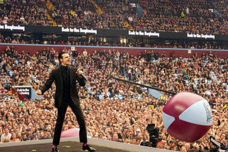
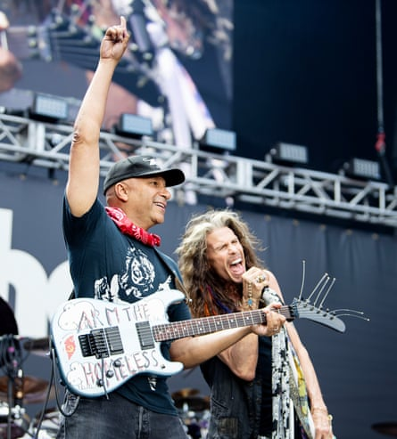
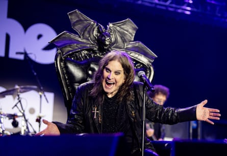

F ireworks burst over Villa Park’s pitch, Black Sabbath wave goodbye, and the inventors of metal leave the stage for the final time. It has not been an epic show – just War Pigs, NIB, Iron Man and Paranoid – but is the farewell this extraordinary band deserve, with an undercard of stadium-fillers and festival headliners come to pay tribute.
The returning Bill Ward adds the swing other Sabbath drummers have never managed, Tony Iommi churns out those monstrous riffs, Geezer Butler flits around them on bass, and Ozzy Osbourne … is Ozzy Osbourne, a baffled and discomfited force of nature.
At a packed Villa Park, 40,000 metalheads – plus a peak of 5.8m more on the accompanying livestream – have seen their dreams come true in what is basically metal’s Live Aid, right down to the revolving stage. They have been, as many from the stage remind us, part of history.
All of Birmingham has draped itself in black for the final appearance of its prodigal sons. The four members of Sabbath were granted the freedom of the city this week, and the tourist board has declared this the “Summer of Sabbath”, with events not just this weekend, but right through the season. And, of course, there have been the other genuflections towards the group: the renaming of a bridge in their honour, the dedication of a bench, the Black Sabbath ballet (which returns to the city this autumn), and the giant “tifo” of Ozzy Osbourne that the Holte End of Villa Park unveiled last football season.
Sabbath are so indistinguishable from Birmingham at this point (the “home of metal”, as the city likes to remind us) that it was inevitable their final show should happen in the city, just as their previous last-ever shows did, in 1999 and 2017. This time, though, with Osbourne’s health a matter of public concern, this surely will be the last time. Certainly, Ozzy dominates proceedings before even stepping on to the stage, in a way that leaves a slightly sour aftertaste: Ticketmaster sends punters reminders before the gig about the Ozzy Osbourne show, not the Black Sabbath show. Even the Test Match Special team, across at Edgbaston, are talking about it: there’s an Ozzy standup cutout surrounded by black balloons in his hotel lobby, notes former England skipper Michael Vaughan.
In truth, Sabbath’s relationship with Birmingham has not been so close as both sides would like to pretend. One fan site lists all known gigs, and there were plenty of tours during which the band didn’t visit their home town. During their 1970s heyday, especially, they were too busy touring America incessantly to pay more than cursory attention to the UK. It’s entirely possible that more people from Cleveland or Detroit or Pittsburgh than actual Brummies have seen Sabbath live.
Perhaps those years across the Atlantic also account for the composition of the bill, which is heavily weighted in favour of the US – it might have been nice to see some of their West Midlands descendants on the bill, and while KK Downing is there, his presence perhaps precludes the attendance of his former band Judas Priest, with whom relations are fraught. Nevertheless, the bill comprises a list of hard rock superstars, some of which raise questions all of their own: will Guns N’ Roses, even this new, professional iteration, be able to manage a seven-minute changeover and stick to a 15-minute set?
After a greeting from master of ceremonies, Hollywood actor Jason Momoa – a fitful and baffling presence through the day – Mastodon begin proceedings, in front of a stadium already nearly full by 1pm. Giant beach balls in Villa’s claret and blue and Ozzy emblazoned on them bounce around the front of the crowd, as the breeze flicks the sound back and forth. To be fair, though, you wouldn’t realise they had recently shed their lead singer/guitarist and replaced him with an expert YouTube shredder. And like the bands that follow them, they offer up a Sabbath cover in homage.
Rival Sons’ cleaner, bluesier riffs are better suited to the booming stadium sound than Mastodon’s technical grinding. How Anthrax were must remain a mystery to me: sets are so short (around 15 minutes), turnarounds so quick and bar queues so immense that those who try to get a drink at the end of one set are sure to miss the whole of the next.
Huge response … Yungblud sings with one of the concert’s superstar lineups.Photograph: Kazuyo Horie
Fronting Halestorm – who don’t cut through – Lzzy Hale asks where all her “women of heavy metal are”, and maybe a twentieth of the crowd raise their hands, but for all the drinking and the testosterone, there is no lairiness or aggression in the air. Even if plastic bottles had been allowed in, no one would be bottled off today.
Much of the afternoon, though, passes in a blur of growled vocals and downtuned guitars. Sets are too short to build momentum, though the inverse of that is that even the most metal-agnostic get no chance to be bored: no one has the time to be self-indulgent. And as the beer kicks in, the crowd liven up: the first circle pits appear during Lamb of God’s set, 90 minutes in, and they get the first true roar for covering Children of the Grave, Sabbath’s 1971 classic, though it doesn’t benefit from Bill Ward’s shuffles being replaced with double kick-drums.
The first of the day’s two all-star bands is fronted by Hale but the day is so focused on Ozzy that the big shout-out goes to his former guitarist Jake E Lee. It’s a set of covers, with rotating singers and players, and A Shot in the Dark is the first sighting of the hair metal side of Osbourne’s career, before a thrillingly brutal Sweet Leaf.
Yungblud is a change of pace and generation, opening with Changes, the piano waltz from the fourth Sabbath record. He’s sincere, passionate and wins a huge response from a crowd who might not be familiar with him, compelling a whole-stadium singalong. One song and he’s gone, having stolen the first third of the show.
As the day passes, Alice in Chains are sluggish, but Gojira impressively pulverising, playing with clarity and directness. Their intricate lead guitar lines somehow serve the PA and the breeze, and for Mea Culpa – accompanied by a soprano – the circle pits reopen. They seem charmingly nervous about introducing their Sabbath cover, Under the Sun, but they shouldn’t be. They kill it.
Musical director Tom Morello and Aerosmith’s Steven Tyler at Back to the Beginning.Photograph: Ross Halfin
They’re followed by a three-drummer superstar drum-off, inserted into a cursory cover of the mighty Symptom of the Universe, rearranged for multiple drum solos. No matter that Momoa insists drums are the heartbeat of heavy metal – drum solos are actually its blocked U-bend. That’s followed by Billy Corgan singing Breaking the Law accompanied by local hero KK Downing and Tom Morello, at which point it’s starting to feel like the metal Royal Variety show: only here would Corgan give way to Sammy Hagar, who kills the momentum stone dead. The variety show air is not quelled by Steven Tyler and Ronnie Wood assembling for Train Kept a Rollin’, before Walk This Way gets the biggest cheer of the day so far, immediately surpassed when the ensemble launch into Whole Lotta Love.
The wholly tribal nature of the event is illustrated when Pantera take the stage and Cowboys From Hell gets tens of thousands singing along. Thankfully, Phil Anselmo chooses not to offer any of his favourite white power slogans as accompaniment. Tool, too, are greeted like heroes, though their prog-metal is baffling to the uninitiated.
One can see the stadium-readiness when the very biggest turns arrive. After Slayer – which is like listening to road works, take that as compliment or not – Guns N’ Roses patrol the stage as if they own it, opening with Sabbath’s Never Say Die, with Axl Rose on surprisingly good voice. They play Sabbath Bloody Sabbath, too, and only throw in a couple of their own big hits, Paradise City and Welcome to the Jungle. Metallica are fantastic – taut and aggressive from their opening cover of Hole in the Sky. It helps, too, that in For Whom the Bell Tolls they have half a dozen of metal’s greatest riffs in one song.
And then, at last it’s Ozzy. He arrived on stage in a black throne, from which he does not stir. During Coming Home, his struggle with pitch is both painful and moving: he seems on the brink of tears as the crowd carry him home, but brings everything back with a triumphant Crazy Train.
There’s a clear distinction between Ozzy’s set and Sabbath’s set. Ozzy’s, of course, is based largely on his 80s solo hits. Mr Crowley, which opens with ominous organ, is ludicrous in its cod-satanism, but equally marvellous. It is perhaps daring for Ozzy to play Suicide Solution – the song that was seen as promoting death among young metalheads – but in this crowd it’s a celebration rather than a commiseration.
The prince on his throne … Ozzy Osbourne.Photograph: Ross Halfin/Black Sabbath
Sabbath, by contrast, draw solely on their first two albums. Fortunately, for those who wish to hear more, throughout the show the assembled artists visit the Sabbath catalogue with great frequency and ardour.
Nevertheless, none of them have the unique bludgeoning force that the forefathers of heavy music still possess. On the big screens you can see Tony Iommi’s false fingertips, employed to enable him to play those downtuned chords for the decades since he lost those digits in a factory accident. And the band pay tribute to their surroundings: to close their set, Geezer Butler plays a bass in Villa’s claret and blue colours with the club motto printed on the body. It’s a very Birmingham way of doing things on what has been a very international day.
It’s affecting to see how united the crowd are behind Ozzy, with plenty of wiped tears during his solo set. But in the end, the night, rightly, belongs not just to him, but to four Brummies who changed rock music for ever.